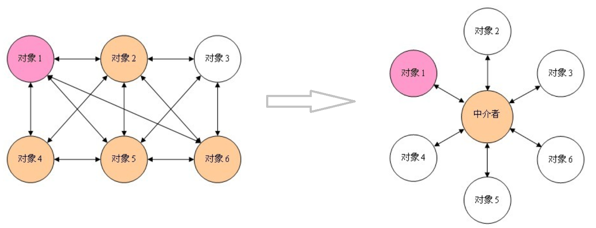

6，行为型模式
6.5 状态模式
6.5.1 概述
【例】通过按钮来控制一个电梯的状态，一个电梯有开门状态，关门状态，停止状态，运行状态。每一种状态改变，都有可能要根据其他状态来更新处理。例如，如果电梯门现在处于运行时状态，就不能进行开门操作，而如果电梯门是停止状态，就可以执行开门操作。
类图如下：

代码如下：
x1public interface ILift {2 //电梯的4个状态3 //开门状态4 public final static int OPENING_STATE = 1;5 //关门状态6 public final static int CLOSING_STATE = 2;7 //运行状态8 public final static int RUNNING_STATE = 3;9 //停止状态10 public final static int STOPPING_STATE = 4;1112 //设置电梯的状态13 public void setState(int state);1415 //电梯的动作16 public void open();17 public void close();18 public void run();19 public void stop();20}2122public class Lift implements ILift {23 private int state;2425 26 public void setState(int state) {27 this.state = state;28 }2930 //执行关门动作31 32 public void close() {33 switch (this.state) {34 case OPENING_STATE:35 System.out.println("电梯关门了。。。");//只有开门状态可以关闭电梯门，可以对应电梯状态表来看36 this.setState(CLOSING_STATE);//关门之后电梯就是关闭状态了37 break;38 case CLOSING_STATE:39 //do nothing //已经是关门状态，不能关门40 break;41 case RUNNING_STATE:42 //do nothing //运行时电梯门是关着的，不能关门43 break;44 case STOPPING_STATE:45 //do nothing //停止时电梯也是关着的，不能关门46 break;47 }48 }4950 //执行开门动作51 52 public void open() {53 switch (this.state) {54 case OPENING_STATE://门已经开了，不能再开门了55 //do nothing56 break;57 case CLOSING_STATE://关门状态，门打开:58 System.out.println("电梯门打开了。。。");59 this.setState(OPENING_STATE);60 break;61 case RUNNING_STATE:62 //do nothing 运行时电梯不能开门63 break;64 case STOPPING_STATE:65 System.out.println("电梯门开了。。。");//电梯停了，可以开门了66 this.setState(OPENING_STATE);67 break;68 }69 }7071 //执行运行动作72 73 public void run() {74 switch (this.state) {75 case OPENING_STATE://电梯不能开着门就走76 //do nothing77 break;78 case CLOSING_STATE://门关了，可以运行了79 System.out.println("电梯开始运行了。。。");80 this.setState(RUNNING_STATE);//现在是运行状态81 break;82 case RUNNING_STATE:83 //do nothing 已经是运行状态了84 break;85 case STOPPING_STATE:86 System.out.println("电梯开始运行了。。。");87 this.setState(RUNNING_STATE);88 break;89 }90 }9192 //执行停止动作93 94 public void stop() {95 switch (this.state) {96 case OPENING_STATE: //开门的电梯已经是是停止的了(正常情况下)97 //do nothing98 break;99 case CLOSING_STATE://关门时才可以停止100 System.out.println("电梯停止了。。。");101 this.setState(STOPPING_STATE);102 break;103 case RUNNING_STATE://运行时当然可以停止了104 System.out.println("电梯停止了。。。");105 this.setState(STOPPING_STATE);106 break;107 case STOPPING_STATE:108 //do nothing109 break;110 }111 }112}113114public class Client {115 public static void main(String[] args) {116 Lift lift = new Lift();117 lift.setState(ILift.STOPPING_STATE);//电梯是停止的118 lift.open();//开门119 lift.close();//关门120 lift.run();//运行121 lift.stop();//停止122 }123}问题分析：
- 使用了大量的switch…case这样的判断（if…else也是一样)，使程序的可阅读性变差。
- 扩展性很差。如果新加了断电的状态，我们需要修改上面判断逻辑
定义：
对有状态的对象，把复杂的“判断逻辑”提取到不同的状态对象中，允许状态对象在其内部状态发生改变时改变其行为。
6.5.2 结构
状态模式包含以下主要角色。
- 环境（Context）角色：也称为上下文，它定义了客户程序需要的接口，维护一个当前状态，并将与状态相关的操作委托给当前状态对象来处理。
- 抽象状态（State）角色：定义一个接口，用以封装环境对象中的特定状态所对应的行为。
- 具体状态（Concrete State）角色：实现抽象状态所对应的行为。
6.5.3 案例实现
对上述电梯的案例使用状态模式进行改进。类图如下：

代码如下：
xxxxxxxxxx2011//抽象状态类2public abstract class LiftState {3 //定义一个环境角色，也就是封装状态的变化引起的功能变化4 protected Context context;56 public void setContext(Context context) {7 this.context = context;8 }910 //电梯开门动作11 public abstract void open();1213 //电梯关门动作14 public abstract void close();1516 //电梯运行动作17 public abstract void run();1819 //电梯停止动作20 public abstract void stop();21}2223//开启状态24public class OpenningState extends LiftState {2526 //开启当然可以关闭了，我就想测试一下电梯门开关功能27 28 public void open() {29 System.out.println("电梯门开启...");30 }3132 33 public void close() {34 //状态修改35 super.context.setLiftState(Context.closeingState);36 //动作委托为CloseState来执行，也就是委托给了ClosingState子类执行这个动作37 super.context.getLiftState().close();38 }3940 //电梯门不能开着就跑，这里什么也不做41 42 public void run() {43 //do nothing44 }4546 //开门状态已经是停止的了47 48 public void stop() {49 //do nothing50 }51}5253//运行状态54public class RunningState extends LiftState {5556 //运行的时候开电梯门？你疯了！电梯不会给你开的57 58 public void open() {59 //do nothing60 }6162 //电梯门关闭？这是肯定了63 64 public void close() {//虽然可以关门，但这个动作不归我执行65 //do nothing66 }6768 //这是在运行状态下要实现的方法69 70 public void run() {71 System.out.println("电梯正在运行...");72 }7374 //这个事绝对是合理的，光运行不停止还有谁敢做这个电梯？！估计只有上帝了75 76 public void stop() {77 super.context.setLiftState(Context.stoppingState);78 super.context.stop();79 }80}8182//停止状态83public class StoppingState extends LiftState {8485 //停止状态，开门，那是要的！86 87 public void open() {88 //状态修改89 super.context.setLiftState(Context.openningState);90 //动作委托为CloseState来执行，也就是委托给了ClosingState子类执行这个动作91 super.context.getLiftState().open();92 }9394 95 public void close() {//虽然可以关门，但这个动作不归我执行96 //状态修改97 super.context.setLiftState(Context.closeingState);98 //动作委托为CloseState来执行，也就是委托给了ClosingState子类执行这个动作99 super.context.getLiftState().close();100 }101102 //停止状态再跑起来，正常的很103 104 public void run() {105 //状态修改106 super.context.setLiftState(Context.runningState);107 //动作委托为CloseState来执行，也就是委托给了ClosingState子类执行这个动作108 super.context.getLiftState().run();109 }110111 //停止状态是怎么发生的呢？当然是停止方法执行了112 113 public void stop() {114 System.out.println("电梯停止了...");115 }116}117118//关闭状态119public class ClosingState extends LiftState {120121 122 //电梯门关闭，这是关闭状态要实现的动作123 public void close() {124 System.out.println("电梯门关闭...");125 }126127 //电梯门关了再打开，逗你玩呢，那这个允许呀128 129 public void open() {130 super.context.setLiftState(Context.openningState);131 super.context.open();132 }133134135 //电梯门关了就跑，这是再正常不过了136 137 public void run() {138 super.context.setLiftState(Context.runningState);139 super.context.run();140 }141142 //电梯门关着，我就不按楼层143 144 public void stop() {145 super.context.setLiftState(Context.stoppingState);146 super.context.stop();147 }148}149150//环境角色151public class Context {152 //定义出所有的电梯状态153 public final static OpenningState openningState = new OpenningState();//开门状态，这时候电梯只能关闭154 public final static ClosingState closeingState = new ClosingState();//关闭状态，这时候电梯可以运行、停止和开门155 public final static RunningState runningState = new RunningState();//运行状态，这时候电梯只能停止156 public final static StoppingState stoppingState = new StoppingState();//停止状态，这时候电梯可以开门、运行157158159 //定义一个当前电梯状态160 private LiftState liftState;161162 public LiftState getLiftState() {163 return this.liftState;164 }165166 public void setLiftState(LiftState liftState) {167 //当前环境改变168 this.liftState = liftState;169 //把当前的环境通知到各个实现类中170 this.liftState.setContext(this);171 }172173 public void open() {174 this.liftState.open();175 }176177 public void close() {178 this.liftState.close();179 }180181 public void run() {182 this.liftState.run();183 }184185 public void stop() {186 this.liftState.stop();187 }188}189190//测试类191public class Client {192 public static void main(String[] args) {193 Context context = new Context();194 context.setLiftState(new ClosingState());195196 context.open();197 context.close();198 context.run();199 context.stop();200 }201}
6.5.4 优缺点
1，优点：
- 将所有与某个状态有关的行为放到一个类中，并且可以方便地增加新的状态，只需要改变对象状态即可改变对象的行为。
- 允许状态转换逻辑与状态对象合成一体，而不是某一个巨大的条件语句块。
2，缺点：
- 状态模式的使用必然会增加系统类和对象的个数。
- 状态模式的结构与实现都较为复杂，如果使用不当将导致程序结构和代码的混乱。
- 状态模式对"开闭原则"的支持并不太好。
6.5.5 使用场景
- 当一个对象的行为取决于它的状态，并且它必须在运行时根据状态改变它的行为时，就可以考虑使用状态模式。
- 一个操作中含有庞大的分支结构，并且这些分支决定于对象的状态时。
6.6 观察者模式
6.6.1 概述
定义：
又被称为发布-订阅（Publish/Subscribe）模式，它定义了一种一对多的依赖关系，让多个观察者对象同时监听某一个主题对象。这个主题对象在状态变化时，会通知所有的观察者对象，使他们能够自动更新自己。
6.6.2 结构
在观察者模式中有如下角色：
- Subject：抽象主题（抽象被观察者），抽象主题角色把所有观察者对象保存在一个集合里，每个主题都可以有任意数量的观察者，抽象主题提供一个接口，可以增加和删除观察者对象。
- ConcreteSubject：具体主题（具体被观察者），该角色将有关状态存入具体观察者对象，在具体主题的内部状态发生改变时，给所有注册过的观察者发送通知。
- Observer：抽象观察者，是观察者的抽象类，它定义了一个更新接口，使得在得到主题更改通知时更新自己。
- ConcrereObserver：具体观察者，实现抽象观察者定义的更新接口，以便在得到主题更改通知时更新自身的状态。
6.6.3 案例实现
【例】微信公众号
在使用微信公众号时，大家都会有这样的体验，当你关注的公众号中有新内容更新的话，它就会推送给关注公众号的微信用户端。我们使用观察者模式来模拟这样的场景，微信用户就是观察者，微信公众号是被观察者，有多个的微信用户关注了程序猿这个公众号。
类图如下：

代码如下：
定义抽象观察者类，里面定义一个更新的方法
xxxxxxxxxx31public interface Observer {2 void update(String message);3}定义具体观察者类，微信用户是观察者，里面实现了更新的方法
xxxxxxxxxx121public class WeixinUser implements Observer {2 // 微信用户名3 private String name;45 public WeixinUser(String name) {6 this.name = name;7 }8 9 public void update(String message) {10 System.out.println(name + "-" + message);11 }12}定义抽象主题类，提供了attach、detach、notify三个方法
xxxxxxxxxx111public interface Subject {2 //增加订阅者3 public void attach(Observer observer);45 //删除订阅者6 public void detach(Observer observer);7 8 //通知订阅者更新消息9 public void notify(String message);10}11微信公众号是具体主题（具体被观察者），里面存储了订阅该公众号的微信用户，并实现了抽象主题中的方法
xxxxxxxxxx211public class SubscriptionSubject implements Subject {2 //储存订阅公众号的微信用户3 private List<Observer> weixinUserlist = new ArrayList<Observer>();45 6 public void attach(Observer observer) {7 weixinUserlist.add(observer);8 }910 11 public void detach(Observer observer) {12 weixinUserlist.remove(observer);13 }1415 16 public void notify(String message) {17 for (Observer observer : weixinUserlist) {18 observer.update(message);19 }20 }21}客户端程序
xxxxxxxxxx161public class Client {2 public static void main(String[] args) {3 SubscriptionSubject mSubscriptionSubject=new SubscriptionSubject();4 //创建微信用户5 WeixinUser user1=new WeixinUser("孙悟空");6 WeixinUser user2=new WeixinUser("猪悟能");7 WeixinUser user3=new WeixinUser("沙悟净");8 //订阅公众号9 mSubscriptionSubject.attach(user1);10 mSubscriptionSubject.attach(user2);11 mSubscriptionSubject.attach(user3);12 //公众号更新发出消息给订阅的微信用户13 mSubscriptionSubject.notify("传智黑马的专栏更新了");14 }15}16
6.6.4 优缺点
1，优点：
- 降低了目标与观察者之间的耦合关系，两者之间是抽象耦合关系。
- 被观察者发送通知，所有注册的观察者都会收到信息【可以实现广播机制】
2，缺点：
- 如果观察者非常多的话，那么所有的观察者收到被观察者发送的通知会耗时
- 如果被观察者有循环依赖的话，那么被观察者发送通知会使观察者循环调用，会导致系统崩溃
6.6.5 使用场景
- 对象间存在一对多关系，一个对象的状态发生改变会影响其他对象。
- 当一个抽象模型有两个方面，其中一个方面依赖于另一方面时。
6.6.6 JDK中提供的实现
在 Java 中，通过 java.util.Observable 类和 java.util.Observer 接口定义了观察者模式，只要实现它们的子类就可以编写观察者模式实例。
1，Observable类
Observable 类是抽象目标类（被观察者），它有一个 Vector 集合成员变量，用于保存所有要通知的观察者对象，下面来介绍它最重要的 3 个方法。
- void addObserver(Observer o) 方法：用于将新的观察者对象添加到集合中。
- void notifyObservers(Object arg) 方法：调用集合中的所有观察者对象的 update方法，通知它们数据发生改变。通常越晚加入集合的观察者越先得到通知。
- void setChange() 方法：用来设置一个 boolean 类型的内部标志，注明目标对象发生了变化。当它为true时，notifyObservers() 才会通知观察者。
2，Observer 接口
Observer 接口是抽象观察者，它监视目标对象的变化，当目标对象发生变化时，观察者得到通知，并调用 update 方法，进行相应的工作。
【例】警察抓小偷
警察抓小偷也可以使用观察者模式来实现，警察是观察者，小偷是被观察者。代码如下：
小偷是一个被观察者，所以需要继承Observable类
xxxxxxxxxx231public class Thief extends Observable {23 private String name;45 public Thief(String name) {6 this.name = name;7 }8 9 public void setName(String name) {10 this.name = name;11 }1213 public String getName() {14 return name;15 }1617 public void steal() {18 System.out.println("小偷：我偷东西了，有没有人来抓我！！！");19 super.setChanged(); //changed = true20 super.notifyObservers();21 }22}23警察是一个观察者，所以需要让其实现Observer接口
xxxxxxxxxx201public class Policemen implements Observer {23 private String name;45 public Policemen(String name) {6 this.name = name;7 }8 public void setName(String name) {9 this.name = name;10 }1112 public String getName() {13 return name;14 }1516 17 public void update(Observable o, Object arg) {18 System.out.println("警察：" + ((Thief) o).getName() + "，我已经盯你很久了，你可以保持沉默，但你所说的将成为呈堂证供！！！");19 }20}客户端代码
xxxxxxxxxx121public class Client {2 public static void main(String[] args) {3 //创建小偷对象4 Thief t = new Thief("隔壁老王");5 //创建警察对象6 Policemen p = new Policemen("小李");7 //让警察盯着小偷8 t.addObserver(p);9 //小偷偷东西10 t.steal();11 }12}
6.7 中介者模式
6.7.1 概述
一般来说，同事类之间的关系是比较复杂的，多个同事类之间互相关联时，他们之间的关系会呈现为复杂的网状结构，这是一种过度耦合的架构，即不利于类的复用，也不稳定。例如在下左图中，有六个同事类对象，假如对象1发生变化，那么将会有4个对象受到影响。如果对象2发生变化，那么将会有5个对象受到影响。也就是说，同事类之间直接关联的设计是不好的。
如果引入中介者模式，那么同事类之间的关系将变为星型结构，从下右图中可以看到，任何一个类的变动，只会影响的类本身，以及中介者，这样就减小了系统的耦合。一个好的设计，必定不会把所有的对象关系处理逻辑封装在本类中，而是使用一个专门的类来管理那些不属于自己的行为。

定义：
又叫调停模式，定义一个中介角色来封装一系列对象之间的交互，使原有对象之间的耦合松散，且可以独立地改变它们之间的交互。
6.7.2 结构
中介者模式包含以下主要角色：
- 抽象中介者（Mediator）角色：它是中介者的接口，提供了同事对象注册与转发同事对象信息的抽象方法。
- 具体中介者（ConcreteMediator）角色：实现中介者接口，定义一个 List 来管理同事对象，协调各个同事角色之间的交互关系，因此它依赖于同事角色。
- 抽象同事类（Colleague）角色：定义同事类的接口，保存中介者对象，提供同事对象交互的抽象方法，实现所有相互影响的同事类的公共功能。
- 具体同事类（Concrete Colleague）角色：是抽象同事类的实现者，当需要与其他同事对象交互时，由中介者对象负责后续的交互。
6.7.3 案例实现
【例】租房
现在租房基本都是通过房屋中介，房主将房屋托管给房屋中介，而租房者从房屋中介获取房屋信息。房屋中介充当租房者与房屋所有者之间的中介者。
类图如下：

代码如下：
xxxxxxxxxx1011//抽象中介者2public abstract class Mediator {3 //申明一个联络方法4 public abstract void constact(String message,Person person);5}67//抽象同事类8public abstract class Person {9 protected String name;10 protected Mediator mediator;1112 public Person(String name,Mediator mediator){13 this.name = name;14 this.mediator = mediator;15 }16}1718//具体同事类 房屋拥有者19public class HouseOwner extends Person {2021 public HouseOwner(String name, Mediator mediator) {22 super(name, mediator);23 }2425 //与中介者联系26 public void constact(String message){27 mediator.constact(message, this);28 }2930 //获取信息31 public void getMessage(String message){32 System.out.println("房主" + name +"获取到的信息：" + message);33 }34}3536//具体同事类 承租人37public class Tenant extends Person {38 public Tenant(String name, Mediator mediator) {39 super(name, mediator);40 }4142 //与中介者联系43 public void constact(String message){44 mediator.constact(message, this);45 }4647 //获取信息48 public void getMessage(String message){49 System.out.println("租房者" + name +"获取到的信息：" + message);50 }51}5253//中介机构54public class MediatorStructure extends Mediator {55 //首先中介结构必须知道所有房主和租房者的信息56 private HouseOwner houseOwner;57 private Tenant tenant;5859 public HouseOwner getHouseOwner() {60 return houseOwner;61 }6263 public void setHouseOwner(HouseOwner houseOwner) {64 this.houseOwner = houseOwner;65 }6667 public Tenant getTenant() {68 return tenant;69 }7071 public void setTenant(Tenant tenant) {72 this.tenant = tenant;73 }7475 public void constact(String message, Person person) {76 if (person == houseOwner) { //如果是房主，则租房者获得信息77 tenant.getMessage(message);78 } else { //反正则是房主获得信息79 houseOwner.getMessage(message);80 }81 }82}8384//测试类85public class Client {86 public static void main(String[] args) {87 //一个房主、一个租房者、一个中介机构88 MediatorStructure mediator = new MediatorStructure();8990 //房主和租房者只需要知道中介机构即可91 HouseOwner houseOwner = new HouseOwner("张三", mediator);92 Tenant tenant = new Tenant("李四", mediator);9394 //中介结构要知道房主和租房者95 mediator.setHouseOwner(houseOwner);96 mediator.setTenant(tenant);9798 tenant.constact("需要租三室的房子");99 houseOwner.constact("我这有三室的房子，你需要租吗？");100 }101}
6.7.4 优缺点
1，优点：
松散耦合
中介者模式通过把多个同事对象之间的交互封装到中介者对象里面，从而使得同事对象之间松散耦合，基本上可以做到互补依赖。这样一来，同事对象就可以独立地变化和复用，而不再像以前那样“牵一处而动全身”了。
集中控制交互
多个同事对象的交互，被封装在中介者对象里面集中管理，使得这些交互行为发生变化的时候，只需要修改中介者对象就可以了，当然如果是已经做好的系统，那么就扩展中介者对象，而各个同事类不需要做修改。
一对多关联转变为一对一的关联
没有使用中介者模式的时候，同事对象之间的关系通常是一对多的，引入中介者对象以后，中介者对象和同事对象的关系通常变成双向的一对一，这会让对象的关系更容易理解和实现。
2，缺点：
当同事类太多时，中介者的职责将很大，它会变得复杂而庞大，以至于系统难以维护。
6.7.5 使用场景
- 系统中对象之间存在复杂的引用关系，系统结构混乱且难以理解。
- 当想创建一个运行于多个类之间的对象，又不想生成新的子类时。
6.8 迭代器模式
6.8.1 概述
定义：
提供一个对象来顺序访问聚合对象中的一系列数据，而不暴露聚合对象的内部表示。
6.8.2 结构
迭代器模式主要包含以下角色：
- 抽象聚合（Aggregate）角色：定义存储、添加、删除聚合元素以及创建迭代器对象的接口。
- 具体聚合（ConcreteAggregate）角色：实现抽象聚合类，返回一个具体迭代器的实例。
- 抽象迭代器（Iterator）角色：定义访问和遍历聚合元素的接口，通常包含 hasNext()、next() 等方法。
- 具体迭代器（Concretelterator）角色：实现抽象迭代器接口中所定义的方法，完成对聚合对象的遍历，记录遍历的当前位置。
6.8.3 案例实现
【例】定义一个可以存储学生对象的容器对象，将遍历该容器的功能交由迭代器实现，涉及到的类如下：

代码如下：
定义迭代器接口，声明hasNext、next方法
xxxxxxxxxx41public interface StudentIterator {2 boolean hasNext();3 Student next();4}定义具体的迭代器类，重写所有的抽象方法
xxxxxxxxxx201public class StudentIteratorImpl implements StudentIterator {2 private List<Student> list;3 private int position = 0;45 public StudentIteratorImpl(List<Student> list) {6 this.list = list;7 }89 10 public boolean hasNext() {11 return position < list.size();12 }1314 15 public Student next() {16 Student currentStudent = list.get(position);17 position ++;18 return currentStudent;19 }20}定义抽象容器类，包含添加元素，删除元素，获取迭代器对象的方法
xxxxxxxxxx71public interface StudentAggregate {2 void addStudent(Student student);34 void removeStudent(Student student);56 StudentIterator getStudentIterator();7}定义具体的容器类，重写所有的方法
xxxxxxxxxx191public class StudentAggregateImpl implements StudentAggregate {23 private List<Student> list = new ArrayList<Student>(); // 学生列表45 6 public void addStudent(Student student) {7 this.list.add(student);8 }910 11 public void removeStudent(Student student) {12 this.list.remove(student);13 }1415 16 public StudentIterator getStudentIterator() {17 return new StudentIteratorImpl(list);18 }19}
6.8.4 优缺点
1，优点：
- 它支持以不同的方式遍历一个聚合对象，在同一个聚合对象上可以定义多种遍历方式。在迭代器模式中只需要用一个不同的迭代器来替换原有迭代器即可改变遍历算法，我们也可以自己定义迭代器的子类以支持新的遍历方式。
- 迭代器简化了聚合类。由于引入了迭代器，在原有的聚合对象中不需要再自行提供数据遍历等方法，这样可以简化聚合类的设计。
- 在迭代器模式中，由于引入了抽象层，增加新的聚合类和迭代器类都很方便，无须修改原有代码，满足 “开闭原则” 的要求。
2，缺点：
增加了类的个数，这在一定程度上增加了系统的复杂性。
6.8.5 使用场景
- 当需要为聚合对象提供多种遍历方式时。
- 当需要为遍历不同的聚合结构提供一个统一的接口时。
- 当访问一个聚合对象的内容而无须暴露其内部细节的表示时。
6.8.6 JDK源码解析
迭代器模式在JAVA的很多集合类中被广泛应用，接下来看看JAVA源码中是如何使用迭代器模式的。
xxxxxxxxxx51List<String> list = new ArrayList<>();2Iterator<String> iterator = list.iterator(); //list.iterator()方法返回的肯定是Iterator接口的子实现类对象3while (iterator.hasNext()) {4 System.out.println(iterator.next());5}看完这段代码是不是很熟悉，与我们上面代码基本类似。单列集合都使用到了迭代器，我们以ArrayList举例来说明
- List：抽象聚合类
- ArrayList：具体的聚合类
- Iterator：抽象迭代器
- list.iterator()：返回的是实现了
Iterator接口的具体迭代器对象
具体的来看看 ArrayList的代码实现
xxxxxxxxxx331public class ArrayList<E> extends AbstractList<E>2 implements List<E>, RandomAccess, Cloneable, java.io.Serializable {3 4 public Iterator<E> iterator() {5 return new Itr();6 }7 8 private class Itr implements Iterator<E> {9 int cursor; // 下一个要返回元素的索引10 int lastRet = -1; // 上一个返回元素的索引11 int expectedModCount = modCount;1213 Itr() {}14 15 //判断是否还有元素16 public boolean hasNext() {17 return cursor != size;18 }1920 //获取下一个元素21 public E next() {22 checkForComodification();23 int i = cursor;24 if (i >= size)25 throw new NoSuchElementException();26 Object[] elementData = ArrayList.this.elementData;27 if (i >= elementData.length)28 throw new ConcurrentModificationException();29 cursor = i + 1;30 return (E) elementData[lastRet = i];31 }32 ...33}这部分代码还是比较简单，大致就是在 iterator 方法中返回了一个实例化的 Iterator 对象。Itr是一个内部类，它实现了 Iterator 接口并重写了其中的抽象方法。
注意：
当我们在使用JAVA开发的时候，想使用迭代器模式的话，只要让我们自己定义的容器类实现
java.util.Iterable并实现其中的iterator()方法使其返回一个java.util.Iterator的实现类就可以了。
6.9 访问者模式
6.9.1 概述
定义：
封装一些作用于某种数据结构中的各元素的操作，它可以在不改变这个数据结构的前提下定义作用于这些元素的新的操作。
6.9.2 结构
访问者模式包含以下主要角色:
- 抽象访问者（Visitor）角色：定义了对每一个元素
（Element）访问的行为，它的参数就是可以访问的元素，它的方法个数理论上来讲与元素类个数（Element的实现类个数）是一样的，从这点不难看出，访问者模式要求元素类的个数不能改变。 - 具体访问者（ConcreteVisitor）角色：给出对每一个元素类访问时所产生的具体行为。
- 抽象元素（Element）角色：定义了一个接受访问者的方法（
accept），其意义是指，每一个元素都要可以被访问者访问。 - 具体元素（ConcreteElement）角色： 提供接受访问方法的具体实现，而这个具体的实现，通常情况下是使用访问者提供的访问该元素类的方法。
- 对象结构（Object Structure）角色：定义当中所提到的对象结构，对象结构是一个抽象表述，具体点可以理解为一个具有容器性质或者复合对象特性的类，它会含有一组元素（
Element），并且可以迭代这些元素，供访问者访问。
6.9.3 案例实现
【例】给宠物喂食
现在养宠物的人特别多，我们就以这个为例，当然宠物还分为狗，猫等，要给宠物喂食的话，主人可以喂，其他人也可以喂食。
- 访问者角色：给宠物喂食的人
- 具体访问者角色：主人、其他人
- 抽象元素角色：动物抽象类
- 具体元素角色：宠物狗、宠物猫
- 结构对象角色：主人家
类图如下：

代码如下：
创建抽象访问者接口
xxxxxxxxxx51public interface Person {2 void feed(Cat cat);34 void feed(Dog dog);5}创建不同的具体访问者角色（主人和其他人），都需要实现 Person接口
xxxxxxxxxx241public class Owner implements Person {23 4 public void feed(Cat cat) {5 System.out.println("主人喂食猫");6 }78 9 public void feed(Dog dog) {10 System.out.println("主人喂食狗");11 }12}1314public class Someone implements Person {15 16 public void feed(Cat cat) {17 System.out.println("其他人喂食猫");18 }1920 21 public void feed(Dog dog) {22 System.out.println("其他人喂食狗");23 }24}定义抽象节点 -- 宠物
xxxxxxxxxx31public interface Animal {2 void accept(Person person);3}定义实现Animal接口的 具体节点（元素）
xxxxxxxxxx171public class Dog implements Animal {23 4 public void accept(Person person) {5 person.feed(this);6 System.out.println("好好吃，汪汪汪！！！");7 }8}910public class Cat implements Animal {1112 13 public void accept(Person person) {14 person.feed(this);15 System.out.println("好好吃，喵喵喵！！！");16 }17}定义对象结构，此案例中就是主人的家
xxxxxxxxxx151public class Home {2 private List<Animal> nodeList = new ArrayList<Animal>();34 public void action(Person person) {5 for (Animal node : nodeList) {6 node.accept(person);7 }8 }910 //添加操作11 public void add(Animal animal) {12 nodeList.add(animal);13 }14}15测试类
xxxxxxxxxx131public class Client {2 public static void main(String[] args) {3 Home home = new Home();4 home.add(new Dog());5 home.add(new Cat());67 Owner owner = new Owner();8 home.action(owner);910 Someone someone = new Someone();11 home.action(someone);12 }13}
6.9.4 优缺点
1，优点：
扩展性好
在不修改对象结构中的元素的情况下，为对象结构中的元素添加新的功能。
复用性好
通过访问者来定义整个对象结构通用的功能，从而提高复用程度。
分离无关行为
通过访问者来分离无关的行为，把相关的行为封装在一起，构成一个访问者，这样每一个访问者的功能都比较单一。
2，缺点：
对象结构变化很困难
在访问者模式中，每增加一个新的元素类，都要在每一个具体访问者类中增加相应的具体操作，这违背了“开闭原则”。
违反了依赖倒置原则
访问者模式依赖了具体类，而没有依赖抽象类。
6.9.5 使用场景
对象结构相对稳定，但其操作算法经常变化的程序。
对象结构中的对象需要提供多种不同且不相关的操作，而且要避免让这些操作的变化影响对象的结构。
6.9.6 扩展
访问者模式用到了一种双分派的技术。
1，分派：
变量被声明时的类型叫做变量的静态类型，有些人又把静态类型叫做明显类型；而变量所引用的对象的真实类型又叫做变量的实际类型。比如 Map map = new HashMap() ，map变量的静态类型是 Map ，实际类型是 HashMap 。根据对象的类型而对方法进行的选择，就是分派(Dispatch)，分派(Dispatch)又分为两种，即静态分派和动态分派。
静态分派(Static Dispatch) 发生在编译时期，分派根据静态类型信息发生。静态分派对于我们来说并不陌生，方法重载就是静态分派。
动态分派(Dynamic Dispatch) 发生在运行时期，动态分派动态地置换掉某个方法。Java通过方法的重写支持动态分派。
2，动态分派：
通过方法的重写支持动态分派。
xxxxxxxxxx291public class Animal {2 public void execute() {3 System.out.println("Animal");4 }5}67public class Dog extends Animal {8 9 public void execute() {10 System.out.println("dog");11 }12}1314public class Cat extends Animal {15 16 public void execute() {17 System.out.println("cat");18 }19}2021public class Client {22 public static void main(String[] args) {23 Animal a = new Dog();24 a.execute();25 26 Animal a1 = new Cat();27 a1.execute();28 }29}上面代码的结果大家应该直接可以说出来，这不就是多态吗！运行执行的是子类中的方法。
Java编译器在编译时期并不总是知道哪些代码会被执行，因为编译器仅仅知道对象的静态类型，而不知道对象的真实类型；而方法的调用则是根据对象的真实类型，而不是静态类型。
3，静态分派：
通过方法重载支持静态分派。
xxxxxxxxxx351public class Animal {2}34public class Dog extends Animal {5}67public class Cat extends Animal {8}910public class Execute {11 public void execute(Animal a) {12 System.out.println("Animal");13 }1415 public void execute(Dog d) {16 System.out.println("dog");17 }1819 public void execute(Cat c) {20 System.out.println("cat");21 }22}2324public class Client {25 public static void main(String[] args) {26 Animal a = new Animal();27 Animal a1 = new Dog();28 Animal a2 = new Cat();2930 Execute exe = new Execute();31 exe.execute(a);32 exe.execute(a1);33 exe.execute(a2);34 }35}运行结果：

这个结果可能出乎一些人的意料了，为什么呢？
重载方法的分派是根据静态类型进行的，这个分派过程在编译时期就完成了。
4，双分派：
所谓双分派技术就是在选择一个方法的时候，不仅仅要根据消息接收者（receiver）的运行时区别，还要根据参数的运行时区别。
xxxxxxxxxx441public class Animal {2 public void accept(Execute exe) {3 exe.execute(this);4 }5}67public class Dog extends Animal {8 public void accept(Execute exe) {9 exe.execute(this);10 }11}1213public class Cat extends Animal {14 public void accept(Execute exe) {15 exe.execute(this);16 }17}1819public class Execute {20 public void execute(Animal a) {21 System.out.println("animal");22 }2324 public void execute(Dog d) {25 System.out.println("dog");26 }2728 public void execute(Cat c) {29 System.out.println("cat");30 }31}3233public class Client {34 public static void main(String[] args) {35 Animal a = new Animal();36 Animal d = new Dog();37 Animal c = new Cat();3839 Execute exe = new Execute();40 a.accept(exe);41 d.accept(exe);42 c.accept(exe);43 }44}在上面代码中，客户端将Execute对象做为参数传递给Animal类型的变量调用的方法，这里完成第一次分派，这里是方法重写，所以是动态分派，也就是执行实际类型中的方法，同时也将自己this作为参数传递进去，这里就完成了第二次分派，这里的Execute类中有多个重载的方法，而传递进行的是this，就是具体的实际类型的对象。
说到这里，我们已经明白双分派是怎么回事了，但是它有什么效果呢？就是可以实现方法的动态绑定，我们可以对上面的程序进行修改。
运行结果如下：

双分派实现动态绑定的本质，就是在重载方法委派的前面加上了继承体系中覆盖的环节，由于覆盖是动态的，所以重载就是动态的了。
6.10 备忘录模式
6.10.1 概述
备忘录模式提供了一种状态恢复的实现机制，使得用户可以方便地回到一个特定的历史步骤，当新的状态无效或者存在问题时，可以使用暂时存储起来的备忘录将状态复原，很多软件都提供了撤销（Undo）操作，如 Word、记事本、Photoshop、IDEA等软件在编辑时按 Ctrl+Z 组合键时能撤销当前操作，使文档恢复到之前的状态；还有在 浏览器 中的后退键、数据库事务管理中的回滚操作、玩游戏时的中间结果存档功能、数据库与操作系统的备份操作、棋类游戏中的悔棋功能等都属于这类。
定义：
又叫快照模式，在不破坏封装性的前提下，捕获一个对象的内部状态，并在该对象之外保存这个状态，以便以后当需要时能将该对象恢复到原先保存的状态。
6.10.2 结构
备忘录模式的主要角色如下：
- 发起人（Originator）角色：记录当前时刻的内部状态信息，提供创建备忘录和恢复备忘录数据的功能，实现其他业务功能，它可以访问备忘录里的所有信息。
- 备忘录（Memento）角色：负责存储发起人的内部状态，在需要的时候提供这些内部状态给发起人。
- 管理者（Caretaker）角色：对备忘录进行管理，提供保存与获取备忘录的功能，但其不能对备忘录的内容进行访问与修改。
备忘录有两个等效的接口：
- 窄接口：管理者(Caretaker)对象（和其他发起人对象之外的任何对象）看到的是备忘录的窄接口(narror Interface)，这个窄接口只允许他把备忘录对象传给其他的对象。
- 宽接口：与管理者看到的窄接口相反，发起人对象可以看到一个宽接口(wide Interface)，这个宽接口允许它读取所有的数据，以便根据这些数据恢复这个发起人对象的内部状态。
6.10.3 案例实现
【例】游戏挑战BOSS
游戏中的某个场景，一游戏角色有生命力、攻击力、防御力等数据，在打Boss前和后一定会不一样的，我们允许玩家如果感觉与Boss决斗的效果不理想可以让游戏恢复到决斗之前的状态。
要实现上述案例，有两种方式：
- “白箱”备忘录模式
- “黑箱”备忘录模式
6.10.3.1 “白箱”备忘录模式
备忘录角色对任何对象都提供一个接口，即宽接口，备忘录角色的内部所存储的状态就对所有对象公开。类图如下：

代码如下：
xxxxxxxxxx1371//游戏角色类2public class GameRole {3 private int vit; //生命力4 private int atk; //攻击力5 private int def; //防御力67 //初始化状态8 public void initState() {9 this.vit = 100;10 this.atk = 100;11 this.def = 100;12 }1314 //战斗15 public void fight() {16 this.vit = 0;17 this.atk = 0;18 this.def = 0;19 }2021 //保存角色状态22 public RoleStateMemento saveState() {23 return new RoleStateMemento(vit, atk, def);24 }2526 //回复角色状态27 public void recoverState(RoleStateMemento roleStateMemento) {28 this.vit = roleStateMemento.getVit();29 this.atk = roleStateMemento.getAtk();30 this.def = roleStateMemento.getDef();31 }3233 public void stateDisplay() {34 System.out.println("角色生命力：" + vit);35 System.out.println("角色攻击力：" + atk);36 System.out.println("角色防御力：" + def);37 }3839 public int getVit() {40 return vit;41 }4243 public void setVit(int vit) {44 this.vit = vit;45 }4647 public int getAtk() {48 return atk;49 }5051 public void setAtk(int atk) {52 this.atk = atk;53 }5455 public int getDef() {56 return def;57 }5859 public void setDef(int def) {60 this.def = def;61 }62}6364//游戏状态存储类(备忘录类)65public class RoleStateMemento {66 private int vit;67 private int atk;68 private int def;6970 public RoleStateMemento(int vit, int atk, int def) {71 this.vit = vit;72 this.atk = atk;73 this.def = def;74 }7576 public int getVit() {77 return vit;78 }7980 public void setVit(int vit) {81 this.vit = vit;82 }8384 public int getAtk() {85 return atk;86 }8788 public void setAtk(int atk) {89 this.atk = atk;90 }9192 public int getDef() {93 return def;94 }9596 public void setDef(int def) {97 this.def = def;98 }99}100101//角色状态管理者类102public class RoleStateCaretaker {103 private RoleStateMemento roleStateMemento;104105 public RoleStateMemento getRoleStateMemento() {106 return roleStateMemento;107 }108109 public void setRoleStateMemento(RoleStateMemento roleStateMemento) {110 this.roleStateMemento = roleStateMemento;111 }112}113114//测试类115public class Client {116 public static void main(String[] args) {117 System.out.println("------------大战Boss前------------");118 //大战Boss前119 GameRole gameRole = new GameRole();120 gameRole.initState();121 gameRole.stateDisplay();122123 //保存进度124 RoleStateCaretaker roleStateCaretaker = new RoleStateCaretaker();125 roleStateCaretaker.setRoleStateMemento(gameRole.saveState());126127 System.out.println("------------大战Boss后------------");128 //大战Boss时，损耗严重129 gameRole.fight();130 gameRole.stateDisplay();131 System.out.println("------------恢复之前状态------------");132 //恢复之前状态133 gameRole.recoverState(roleStateCaretaker.getRoleStateMemento());134 gameRole.stateDisplay();135136 }137}分析：白箱备忘录模式是破坏封装性的。但是通过程序员自律，同样可以在一定程度上实现模式的大部分用意。
6.10.3.2 “黑箱”备忘录模式
备忘录角色对发起人对象提供一个宽接口，而为其他对象提供一个窄接口。在Java语言中，实现双重接口的办法就是将备忘录类设计成发起人类的内部成员类。
将 RoleStateMemento 设为 GameRole 的内部类，从而将 RoleStateMemento 对象封装在 GameRole 里面；在外面提供一个标识接口 Memento 给 RoleStateCaretaker 及其他对象使用。这样 GameRole 类看到的是 RoleStateMemento 所有的接口，而RoleStateCaretaker 及其他对象看到的仅仅是标识接口 Memento 所暴露出来的接口，从而维护了封装型。类图如下：

代码如下：
窄接口Memento，这是一个标识接口，因此没有定义出任何的方法
xxxxxxxxxx21public interface Memento {2}定义发起人类 GameRole，并在内部定义备忘录内部类 RoleStateMemento（该内部类设置为私有的）
xxxxxxxxxx1001/游戏角色类2public class GameRole {3 private int vit; //生命力4 private int atk; //攻击力5 private int def; //防御力67 //初始化状态8 public void initState() {9 this.vit = 100;10 this.atk = 100;11 this.def = 100;12 }1314 //战斗15 public void fight() {16 this.vit = 0;17 this.atk = 0;18 this.def = 0;19 }2021 //保存角色状态22 public Memento saveState() {23 return new RoleStateMemento(vit, atk, def);24 }2526 //回复角色状态27 public void recoverState(Memento memento) {28 RoleStateMemento roleStateMemento = (RoleStateMemento) memento;29 this.vit = roleStateMemento.getVit();30 this.atk = roleStateMemento.getAtk();31 this.def = roleStateMemento.getDef();32 }3334 public void stateDisplay() {35 System.out.println("角色生命力：" + vit);36 System.out.println("角色攻击力：" + atk);37 System.out.println("角色防御力：" + def);3839 }4041 public int getVit() {42 return vit;43 }4445 public void setVit(int vit) {46 this.vit = vit;47 }4849 public int getAtk() {50 return atk;51 }5253 public void setAtk(int atk) {54 this.atk = atk;55 }5657 public int getDef() {58 return def;59 }6061 public void setDef(int def) {62 this.def = def;63 }6465 private class RoleStateMemento implements Memento {66 private int vit;67 private int atk;68 private int def;6970 public RoleStateMemento(int vit, int atk, int def) {71 this.vit = vit;72 this.atk = atk;73 this.def = def;74 }7576 public int getVit() {77 return vit;78 }7980 public void setVit(int vit) {81 this.vit = vit;82 }8384 public int getAtk() {85 return atk;86 }8788 public void setAtk(int atk) {89 this.atk = atk;90 }9192 public int getDef() {93 return def;94 }9596 public void setDef(int def) {97 this.def = def;98 }99 }100}负责人角色类 RoleStateCaretaker 能够得到的备忘录对象是以 Memento 为接口的，由于这个接口仅仅是一个标识接口，因此负责人角色不可能改变这个备忘录对象的内容
xxxxxxxxxx121//角色状态管理者类2public class RoleStateCaretaker {3 private Memento memento;45 public Memento getMemento() {6 return memento;7 }89 public void setMemento(Memento memento) {10 this.memento = memento;11 }12}客户端测试类
xxxxxxxxxx231public class Client {2 public static void main(String[] args) {3 System.out.println("------------大战Boss前------------");4 //大战Boss前5 GameRole gameRole = new GameRole();6 gameRole.initState();7 gameRole.stateDisplay();89 //保存进度10 RoleStateCaretaker roleStateCaretaker = new RoleStateCaretaker();11 roleStateCaretaker.setMemento(gameRole.saveState());12 13 System.out.println("------------大战Boss后------------");14 //大战Boss时，损耗严重15 gameRole.fight();16 gameRole.stateDisplay();17 System.out.println("------------恢复之前状态------------");18 //恢复之前状态19 gameRole.recoverState(roleStateCaretaker.getMemento());20 gameRole.stateDisplay();21 }22}23
6.10.4 优缺点
1，优点：
- 提供了一种可以恢复状态的机制。当用户需要时能够比较方便地将数据恢复到某个历史的状态。
- 实现了内部状态的封装。除了创建它的发起人之外，其他对象都不能够访问这些状态信息。
- 简化了发起人类。发起人不需要管理和保存其内部状态的各个备份，所有状态信息都保存在备忘录中，并由管理者进行管理，这符合单一职责原则。
2，缺点：
- 资源消耗大。如果要保存的内部状态信息过多或者特别频繁，将会占用比较大的内存资源。
6.10.5 使用场景
- 需要保存与恢复数据的场景，如玩游戏时的中间结果的存档功能。
- 需要提供一个可回滚操作的场景，如 Word、记事本、Photoshop，idea等软件在编辑时按 Ctrl+Z 组合键，还有数据库中事务操作。